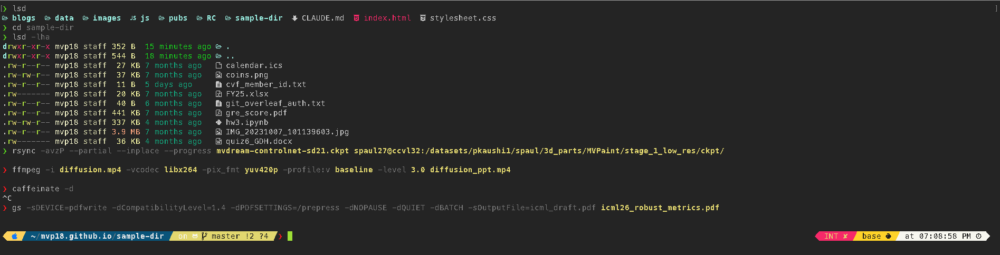
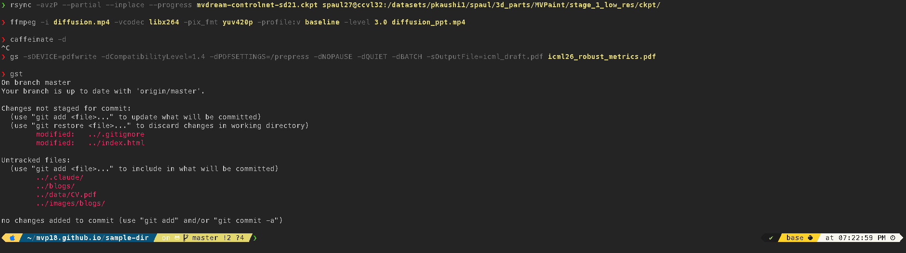
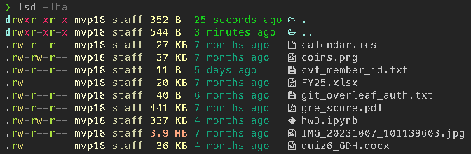

I spend most of my day SSH'd into GPU clusters, managing git repos, compressing PDFs and videos, and moving files between local and remote machines. At some point I got tired of the default macOS Terminal experience and put together a setup that's both functional and pleasant to look at. This post documents exactly what I run so you can reproduce it or steal the parts you like.
Prerequisites
I use macOS Terminal.app with a Monokai color profile and the Hack Nerd Font. iTerm2 works too. Install the core tools up front:
brew install powerlevel10k zsh-autosuggestions zsh-syntax-highlighting \
lsd bat fzf fd ripgrep zoxide git-delta btopThen run p10k configure once to generate ~/.p10k.zsh. Pick the Rainbow style with Nerd Font support.
Prompt: Powerlevel10k
The left prompt shows four segments: an Apple glyph, the current directory, git status, and a prompt character (❯ green on success, red on failure). The right prompt shows exit code, command duration, conda environment, and the time.
# ~/.p10k.zsh
typeset -g POWERLEVEL9K_LEFT_PROMPT_ELEMENTS=(
os_icon dir vcs prompt_char
)
typeset -g POWERLEVEL9K_RIGHT_PROMPT_ELEMENTS=(
status command_execution_time background_jobs
virtualenv anaconda time
)
Directory gradient
Directory paths get a teal-to-pink color gradient, which keeps deeply nested paths readable against the dark navy background. I also define per-directory color classes so my PhD research directory uses a purple gradient, downloads go orange, and project directories go green:
# ~/.p10k.zsh — directory colors
typeset -g POWERLEVEL9K_DIR_BACKGROUND=24 # deep navy
typeset -g POWERLEVEL9K_DIR_FOREGROUND_FROM=81 # teal
typeset -g POWERLEVEL9K_DIR_FOREGROUND_TO=213 # pink
typeset -g POWERLEVEL9K_DIR_FOREGROUND_GRADIENT=true
# Per-directory class gradients
typeset -g POWERLEVEL9K_DIR_CLASSES=(
'~/Documents/New project(|/*)' PROJECT ''
'~/jhu_phd(|/*)' PHD ''
'~/Downloads(|/*)' DOWNLOADS ''
'~(|/*)' HOME ''
'*' DEFAULT ''
)Transient prompt
Once a command finishes, its full prompt collapses to a simple ❯. This keeps scrollback clean — only the current prompt shows all the segments. Set with:
typeset -g POWERLEVEL9K_TRANSIENT_PROMPT=always
❯, the current line gets the full prompt with directory, git, and right-side segments.
Plugins
Four plugins via Oh My Zsh, plus fzf-tab loaded separately:
# ~/.zshrc
plugins=(
git
zsh-autosuggestions
zsh-syntax-highlighting
history-substring-search
)fzf-tab replaces the default zsh completion menu with an fzf-powered popup. Tab-completing cd, git checkout, or kill now shows a fuzzy-searchable list with previews.
Syntax Highlighting and Autosuggestions
The default syntax highlighting colors are garish against a dark background. I tone everything down to muted greys, then highlight specific command patterns so dangerous commands stand out:
# Muted defaults
ZSH_HIGHLIGHT_STYLES[command]='fg=250'
ZSH_HIGHLIGHT_STYLES[unknown-token]='fg=203' # red for errors
# Pattern-based highlights for specific commands
ZSH_HIGHLIGHT_PATTERNS+=(
'sudo *' 'fg=141,bold' # purple
'rm *' 'fg=203,bold' # red
'git *' 'fg=#A6E22E' # green
'ssh *' 'fg=#66D9EF' # cyan
)Autosuggestions are set to a Monokai yellow (#E6DB74) so they're visible but clearly different from the command you're typing.
Modern CLI Replacements
These aliases shadow the default commands so muscle memory stays intact:
# ~/.zshrc
alias ls="lsd --group-dirs=first --icon=always"
alias ll="ls -lh"
alias la="ls -lha"
alias lt="ls --tree"
alias cat="bat --theme='Monokai Extended' --style=plain"- lsd adds file-type icons, human-readable sizes, and relative timestamps to directory listings.
- bat provides syntax-highlighted file previews with the Monokai Extended theme.
- ripgrep (
rg) replacesgrepfor code search — respects.gitignore, smart case by default. - fd replaces
findwith sane defaults and a simpler syntax. - zoxide replaces
cdwith a frecency-ranked directory jumper.z project-namejumps to your most-used match.

lsd -lha output showing file-type icons, permissions, sizes, and relative dates.
Fuzzy Finding with fzf
fzf ties into three keyboard shortcuts: Ctrl-R for history search, Ctrl-T for file search, and Alt-C for directory navigation. I configure it to use fd for file listing (faster than the default find), bat for file previews, and lsd for directory previews:
# Use fd for file listing
export FZF_DEFAULT_COMMAND='fd --type f --hidden --follow --exclude .git'
export FZF_CTRL_T_COMMAND="$FZF_DEFAULT_COMMAND"
# Bat preview for Ctrl-T, lsd preview for Alt-C
export FZF_CTRL_T_OPTS="--preview 'bat --style=numbers --color=always --line-range :200 {}'"
export FZF_ALT_C_OPTS="--preview 'lsd --icon=always --color=always -A {}'"The fzf popup itself is styled to match the Monokai palette — dark background, pink highlights, green info text:
export FZF_DEFAULT_OPTS="--height=40% --layout=reverse --border \
--color=fg:#f8f8f2,bg:#272822,hl:#f92672,fg+:#f8f8f2,bg+:#3e3d32,hl+:#f92672,\
info:#a6e22e,prompt:#66d9ef,pointer:#f92672,marker:#a6e22e"Git + Delta
delta replaces the default git diff pager with syntax-highlighted, line-numbered diffs. Configure it in ~/.gitconfig:
# ~/.gitconfig
[core]
pager = delta
[interactive]
diffFilter = delta --color-only
[delta]
navigate = true
line-numbers = true
syntax-theme = Monokai ExtendedThis means git diff, git log -p, and git show all get the improved rendering automatically. The navigate option lets you jump between diff hunks with n and N.
Git Aliases
The git plugin in Oh My Zsh (already in the plugins=() list above) defines several hundred aliases. These are the ones I actually use daily:
# Staging and committing
gaa # git add --all
gcmsg "fix: ..." # git commit --message "fix: ..."
# Push / pull
ggpush # git push origin <current-branch>
ggpull # git pull origin <current-branch>
gp # git push
gl # git pull
# Status and diff
gst # git status
gd # git diff
gdca # git diff --cached
# Branching
gcb new-branch # git checkout -b new-branch
gco main # git checkout main
gb # git branch
# Log
glog # git log --oneline --decorate --graph
glol # git log --graph --pretty (colored, with author + date)Run alias | grep git to see the full list. The ones above cover the common add-commit-push cycle and save a surprising amount of typing over a day.
History and Completions
A 200K-line shared history with deduplication:
HISTSIZE=200000
SAVEHIST=200000
setopt HIST_IGNORE_ALL_DUPS SHARE_HISTORY EXTENDED_HISTORYAutosuggestions vs. substring search
These two plugins look similar but serve different purposes and work together:
- zsh-autosuggestions shows a single ghost completion inline (in Monokai yellow) as you type, based on your most recent matching history entry. Accept the suggestion with the right arrow key (
→). - history-substring-search lets you cycle through multiple matches with the arrow keys. Type a prefix like
ssh, press Up, and it filters history to only commands containingssh— press Up again to see the next match, Down to go back.
# Bind Up/Down to substring search (not plain history scroll)
bindkey '^[[A' history-substring-search-up
bindkey '^[[B' history-substring-search-downWithout these bindings, Up/Down would cycle through all history chronologically regardless of what you've typed. With them, they filter to matches. Combined with Ctrl-R (fzf fuzzy history search), you get three complementary ways to recall commands.
Colored man pages
The LESS_TERMCAP variables add color to man pages without any external tools. Headers in yellow, underlined text in cyan, search matches highlighted in blue:
export LESS_TERMCAP_md=$'\e[1;33m' # bold/headers: yellow
export LESS_TERMCAP_us=$'\e[1;36m' # underline: cyan
export LESS_TERMCAP_so=$'\e[1;44;97m' # search matches: blue bgStartup Banner
Each new shell prints a system summary via neofetch (or fastfetch if installed). It shows OS, kernel, CPU usage, memory, GPU utilization, disk space, and the top processes by CPU and memory — all pulled from a custom config that gathers macOS-specific metrics:
# A `fetch` function in .zshrc that runs on first prompt
# Collects: CPU temp, GPU util/mem, disk free, top CPU/MEM process
# Then passes them as environment variables to neofetch's custom config
fetch() {
if command -v fastfetch >/dev/null 2>&1; then
fastfetch; return
fi
# Falls back to neofetch with custom ~/.neofetch-funky.conf
...
}The banner is disabled in non-interactive shells and can be toggled off with export FUNKY_BANNER=0.
Workflow Aliases
A few shell functions for tasks I do often enough to want a short command:
PDF compression
Wraps Ghostscript. The quality parameter controls the tradeoff — prepress retains high fidelity (good for papers), ebook is more aggressive, screen is smallest.
# pdfcompress input.pdf [output.pdf] [screen|ebook|printer|prepress]
pdfcompress() {
gs -sDEVICE=pdfwrite -dCompatibilityLevel=1.4 -dPDFSETTINGS=/"$quality" \
-dNOPAUSE -dQUIET -dBATCH -sOutputFile="$output" "$input"
}
# pdfcompress icml26_robust_metrics.pdf icml_draft.pdf prepressImage frames to video
# frames2vid ./rendered_frames/ 30 output.mp4
frames2vid() {
ffmpeg -framerate "$fps" -pattern_type glob -i "${dir}/*.png" \
-c:v libx264 -pix_fmt yuv420p -crf 18 "$output"
}Video compression
Uses the baseline H.264 profile and level 3.0 for compatibility across browsers, presentation software, and mobile devices:
# vidcompress input.mp4 [output.mp4]
vidcompress() {
ffmpeg -i "$input" -vcodec libx264 -pix_fmt yuv420p \
-profile:v baseline -level 3.0 "$output"
}
# vidcompress diffusion.mp4 diffusion_ppt.mp4rsync shortcuts
The -z flag compresses during transfer (useful over SSH to remote clusters), and --inplace avoids creating temporary copies on the remote, which matters when pushing large checkpoints to a shared filesystem:
# Upload (with compression, resume, and common excludes)
alias rup="rsync -avzP --inplace --exclude='.git' --exclude='__pycache__' --exclude='wandb'"
# Download
alias rdn="rsync -avzP --inplace"
# rup mvdream-sd21.ckpt ccvl32:/datasets/spaul/ckpt/
# rdn dsai:/scratch/spaul27/results/ ./results/Universal extract
# Handles tar, zip, gz, bz2, xz, 7z, rar
extract() {
case "$1" in
*.tar.gz|*.tgz) tar xzf "$1" ;;
*.tar.xz|*.txz) tar xJf "$1" ;;
*.zip) unzip "$1" ;;
*.7z) 7z x "$1" ;;
...
esac
}Dotfiles
The complete config files referenced above:
~/.zshrc— shell config, plugins, aliases, workflow functions~/.p10k.zsh— Powerlevel10k prompt segments and colors~/.gitconfig— delta pager configuration~/.config/lsd/config.yaml— lsd icon and sorting settings~/.neofetch-funky.conf— custom neofetch layout with macOS metrics
~/.zshrc or ~/.p10k.zsh, run source ~/.zshrc or open a new terminal tab. Powerlevel10k re-reads its config instantly — no restart needed.
Comments